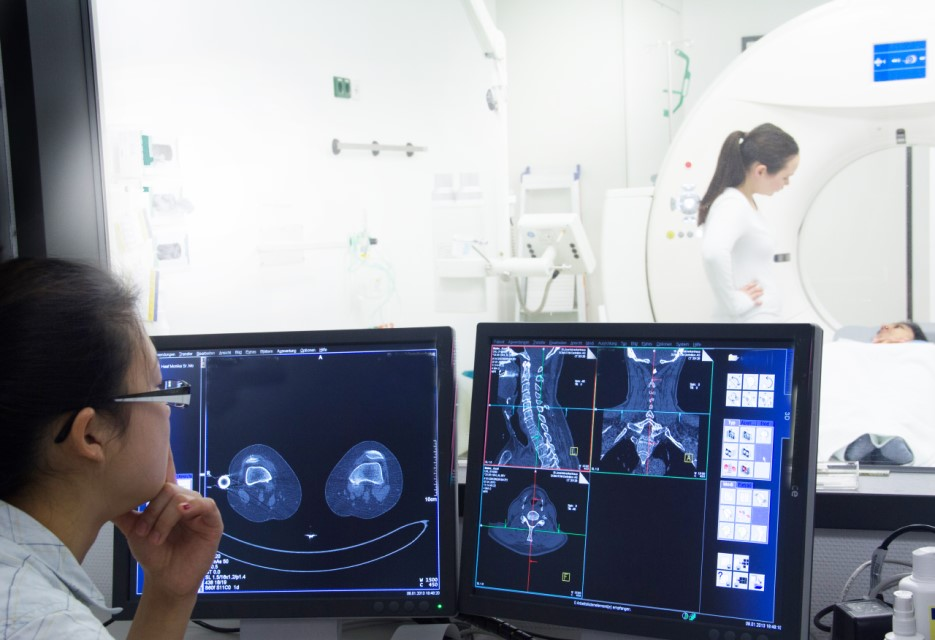
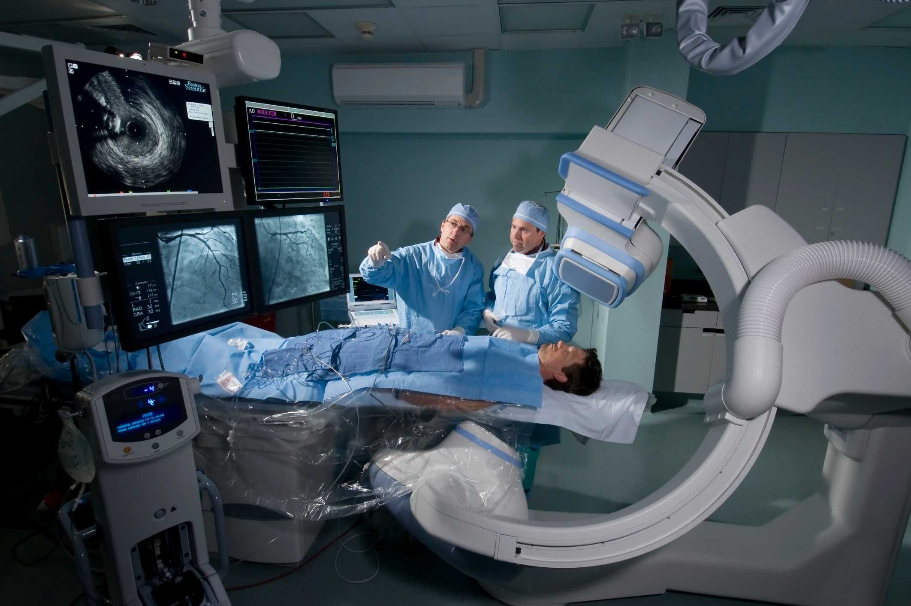

No que a Tecnlogia influência na Ciência?
A influência da tecnologia na saúde é profunda e abrangente, transformando radicalmente a forma como os
cuidados médicos são prestados, diagnosticados e administrados. Esta relação entre tecnologia e saúde está
impulsionando avanços significativos que beneficiam tanto os profissionais de saúde quanto os pacientes.
Aqui estão algumas maneiras pelas quais a tecnologia está moldando a saúde:
1.Diagnóstico e Monitoramento: Tecnologias avançadas, como equipamentos de imagem de última geração (como
tomografia computadorizada, ressonância magnética e ultrassonografia), permitem diagnósticos mais precisos e
precoces. Além disso, dispositivos portáteis de monitoramento, como smartwatches e dispositivos de saúde
conectados à Internet das Coisas (IoT), possibilitam o monitoramento contínuo da saúde dos pacientes,
permitindo a detecção precoce de problemas e o acompanhamento remoto de condições crônicas.
2.Telemedicina: A tecnologia está revolucionando a prestação de cuidados de saúde através da telemedicina,
permitindo consultas médicas virtuais, monitoramento remoto e telessaúde. Isso é especialmente valioso em
áreas rurais ou remotas, onde o acesso a cuidados médicos pode ser limitado. A telemedicina também oferece
conveniência aos pacientes, reduzindo a necessidade de deslocamentos e espera em consultórios médicos.
3.Registro Eletrônico de Saúde (EHR): Sistemas de EHR informatizados facilitam o armazenamento e o
compartilhamento de informações médicas entre profissionais de saúde, melhorando a coordenação do
atendimento, reduzindo erros médicos e proporcionando um histórico completo e acessível de saúde para os
pacientes.
4.Inteligência Artificial e Análise de Dados: A inteligência artificial (IA) e a análise de dados estão
sendo cada vez mais aplicadas na saúde, ajudando os médicos a interpretar grandes volumes de dados médicos,
identificar padrões e tomar decisões clínicas mais informadas. Isso inclui diagnóstico assistido por IA,
previsão de surtos de doenças, descoberta de medicamentos e personalização de tratamentos.
5.Medicina Personalizada e Genômica: Avanços na tecnologia genômica estão possibilitando uma compreensão
mais profunda das bases genéticas de doenças e a criação de tratamentos personalizados com base no perfil
genético de cada paciente. Isso abre novas possibilidades para terapias mais eficazes e direcionadas,
reduzindo os efeitos colaterais e melhorando os resultados clínicos.
6.Robótica e Cirurgia Assistida: A robótica está transformando a cirurgia, permitindo procedimentos mais
precisos, menos invasivos e com tempos de recuperação mais rápidos. Os sistemas robóticos cirúrgicos
auxiliam os cirurgiões em tarefas complexas, aumentando a precisão e reduzindo o risco de complicações.
Esses são apenas alguns exemplos do impacto da tecnologia na saúde, demonstrando como a inovação tecnológica
está impulsionando avanços significativos no diagnóstico, tratamento e gestão de cuidados de saúde,
melhorando a qualidade de vida dos pacientes e promovendo a saúde pública.


Como a Tecnologia Ajuda No Nosso Dia A Dia
1.Comunicação: A tecnologia permite que nos comuniquemos instantaneamente com pessoas ao redor do mundo
através de chamadas de vídeo, mensagens de texto, e-mails e redes sociais. Isso nos ajuda a manter contato
com amigos, familiares e colegas de trabalho, independentemente da distância.
2.Informação: A internet nos fornece acesso a uma quantidade infinita de informações sobre praticamente
qualquer tópico que possamos imaginar. Podemos pesquisar notícias, aprender novas habilidades, encontrar
respostas para perguntas e acessar recursos educacionais com facilidade.
3.Organização: Aplicativos e softwares de organização ajudam a gerenciar nossas agendas, tarefas e
compromissos. Eles nos permitem criar listas de afazeres, agendar lembretes e sincronizar informações entre
dispositivos para que possamos manter nossas vidas organizadas.
4.Mobilidade: Dispositivos móveis, como smartphones e tablets, nos permitem realizar uma variedade de
tarefas em movimento. Podemos fazer compras online, pagar contas, acessar serviços bancários, e até mesmo
trabalhar remotamente de qualquer lugar com uma conexão à internet.
5.Entretenimento: A tecnologia nos oferece uma ampla gama de opções de entretenimento, incluindo streaming
de filmes e programas de TV, jogos eletrônicos, música sob demanda e livros digitais. Isso nos permite
relaxar e descontrair, seja sozinhos ou com amigos e familiares.
6.Saúde: A tecnologia desempenha um papel cada vez mais importante na área da saúde, com dispositivos e
aplicativos que ajudam a monitorar a saúde, rastrear exercícios, controlar a dieta e até mesmo fornecer
diagnósticos preliminares. Isso nos ajuda a cuidar melhor de nós mesmos e a tomar decisões mais informadas
sobre nossa saúde e bem-estar.